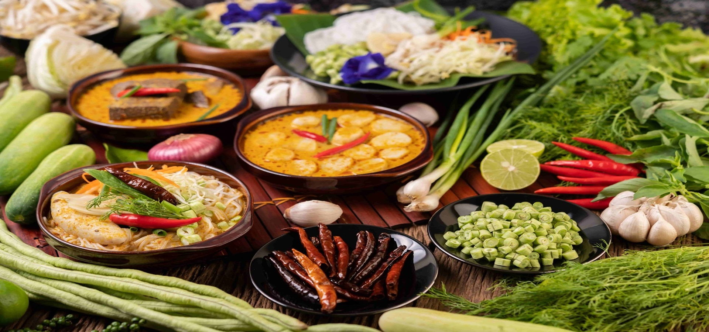

Our Chefs
Meet Chef Dara, Chef Nara and Chef Sao Sopheak.
Meet Our Chefs
Khmer Taste is a food and service website created to introduce traditional Cambodian dishes and make restaurant services easier for customers.
We serve popular Khmer foods such as Fish Amok, Beef Lok Lak, Khmer Rice Noodles, Samlor Korko and traditional desserts.
Our goal is to provide delicious food, friendly service and a comfortable experience for families, friends and visitors.
Explore Our MenuMeet our chefs and read feedback from our customers.
Meet Chef Dara, Chef Nara and Chef Sao Sopheak.
Meet Our ChefsRead what customers say about our Khmer food and services.
Read Reviews